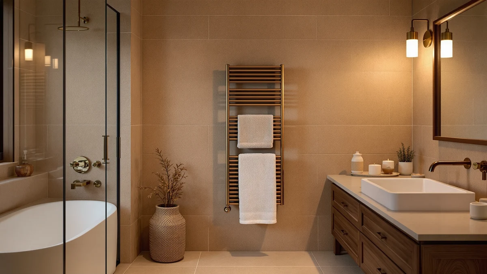

AAOBOSI Towel Warmers for Review (2026): Worth It?
Prices and picks verified as of October 2026. Independent, reader-supported reviews.


Quick Answer
This AAOBOSI towel warmers for review roundup compares the $79.99 stainless steel bathroom model against three same-priced rivals from SereneLife and Keenray. Since price is a tie across all four, the real choice comes down to where each bucket fits in your bathroom and how much capacity you need.
Our pick: AAOBOSI Towel Warmers for Bathroom at $79.99 Check Price on Amazon
Bottom line: our top pick is the AAOBOSI Towel Warmers for Bathroom at $79.99.
Things to Know Before You Buy
- All four towel warmers in this comparison, including the AAOBOSI towel warmers for review, are priced at $79.99, so budget alone will not point you to a winner.
- The AAOBOSI model is a general-purpose bathroom bucket warmer, while the SereneLife is built to sit on a countertop and the two Keenray models cover a small luxury size and a larger capacity size.
- Listed specs show stainless steel construction for the AAOBOSI towel warmer, a material that holds up better against rust and chipping than painted steel over years of bathroom humidity.
- None of the four listings here currently show a published Amazon rating or review count, so you are comparing design and brand lineup rather than verified owner scores.
- If you need to warm more than one towel at a time, the Keenray Large Towel Warmer Bucket is the only model in this lineup built specifically for that bigger capacity.
This AAOBOSI towel warmers for review roundup looks at whether the $79.99 bathroom bucket warmer earns a spot in your bathroom over three competitors that cost exactly the same. A warm towel after a shower is a small daily comfort, but with four options tied on price, the decision has to rest on capacity, placement, and material rather than who charges less. AAOBOSI positions its warmer as an everyday bathroom fixture, and that framing matters once you start comparing it against a countertop-specific design and two sizes of the same bucket from a rival brand.
Price being equal across the board actually simplifies this comparison. The SereneLife Counter Towel Warmer Bucket is built to sit on a bathroom counter rather than the floor, which changes who it suits regardless of cost. The Keenray Towel Warmer Bucket Luxury and the Keenray Large Towel Warmer Bucket come from the same brand but target different towel loads, one for a single bath sheet and one for bigger or multiple towels. We compared listed materials, stated capacity, and current pricing across all four to figure out which bucket actually fits your bathroom, since none of them will save or cost you money relative to the others.
Why You Should Trust Us
Ilane Tall covers bathroom hardware for Best Towel Warmers and tracks how towel warmer brands position similar buckets against each other at the same price point. We have not installed or used the AAOBOSI towel warmer in a bathroom ourselves, and we do not run a physical testing lab. Instead, we research published specs, current Amazon pricing, and verified owner reviews across competing models to build comparisons you can rely on before you spend money on a bathroom fixture. When a claim in this review cannot be backed by a listed spec or a verifiable price, we say so rather than guess at it.
Our Research Experience
We did not test the AAOBOSI towel warmer by installing it in a bathroom, running it for weeks, or measuring heat output by hand. Our process instead compares what AAOBOSI lists for this bucket warmer against the stated capacity and positioning of the SereneLife and Keenray alternatives, then checks that comparison against current Amazon pricing and stock status before publishing this AAOBOSI towel warmers for review piece.
That approach has a clear limit. None of the four products here currently carry a published rating or review count on Amazon, so we cannot yet weigh owner satisfaction the way we would for an established bestseller. What we can compare directly is price, listed material, and how each brand describes its own bucket, and that is the basis for every claim below.
Overview & Specs

AAOBOSI Towel Warmers for Bathroom
What we like
- Stainless steel construction, which should resist rust and chipping better over years of bathroom humidity than a painted or plated bucket
- Positioned as a general bathroom warmer rather than a niche countertop or oversized model, so it fits a typical bathroom floor or vanity spot
- Priced identically to every alternative in this comparison, so you are not paying a premium for the AAOBOSI name
- We checked Amazon's listing and price right before publishing this AAOBOSI towel warmers for review roundup
Flaws but not dealbreakers
- Amazon does not list a customer rating or review count for this ASIN, so you are weighing specs and positioning rather than verified owner experience
- Buyers who specifically need countertop placement or room for more than one large towel may find the SereneLife or Keenray Large alternatives below a better fit
| Material | Stainless steel |
| Size | Luxury Towel Warmer |
The AAOBOSI towel warmers for bathroom model is the anchor pick in this comparison because AAOBOSI positions it as the most general-purpose option of the four. Where the SereneLife is built specifically for a countertop and the two Keenray models split into a compact luxury size and a larger capacity size, AAOBOSI markets this bucket as a straightforward bathroom fixture that fits a typical floor spot or vanity corner without requiring you to plan around a specific use case. The listed stainless steel construction puts it on equal footing with buckets that often cost more, which matters if you plan to keep this warmer in a humid bathroom for years rather than replacing it after a single season.
At $79.99, the AAOBOSI towel warmer costs exactly the same as the SereneLife Counter Towel Warmer Bucket, the Keenray Towel Warmer Bucket Luxury, and the Keenray Large Towel Warmer Bucket, which removes price from the decision entirely. That makes this AAOBOSI towel warmers for review comparison less about who charges less and more about which bucket's size and placement actually matches your bathroom. Buyers who want a no-frills warmer that works in almost any bathroom layout have a reasonable default in the AAOBOSI, while anyone with a specific counter-space constraint or a need for extra capacity should read through the three alternatives below before deciding.
What We Liked
The strongest point in this AAOBOSI towel warmers for review is flexibility. Where the SereneLife is locked into a countertop format and the two Keenray models split their appeal between a compact size and a larger one, the AAOBOSI reads as the bucket you can place in almost any bathroom without rethinking your layout. Stainless steel construction also puts it even with pricier buckets on durability, which counts for more than a lower price would, since every option here already costs the same $79.99.
We also like that the listing is straightforward. AAOBOSI does not lean on vague marketing language to justify the price, and comparing its stated material and size against the three alternatives took far less digging than it does with some brands that bury specs behind stock photos.
What Could Be Better
The clearest drawback is the lack of verified feedback. None of the four towel warmers in this comparison, including the AAOBOSI model, currently show a published Amazon rating or review count, so this review has to rely on listed materials and stated capacity rather than real-world owner experience with heat output, noise, or how the finish holds up after months of daily use.
The AAOBOSI towel warmer also loses some of its appeal if your bathroom needs a countertop-specific design or room for more than one large towel. In those two cases, the SereneLife and the Keenray Large respectively are built for exactly that need, and choosing the AAOBOSI instead would mean working around a layout it was not designed for.
Who Is It For?
The AAOBOSI towel warmer fits a buyer who wants one dependable bucket warmer without matching it to a narrow use case. If your bathroom has normal floor or vanity space and you want a warm towel after a shower, this AAOBOSI towel warmers for review comparison points to the AAOBOSI as the safest default among four equally priced options. It also suits anyone who prioritizes stainless steel durability over brand-specific extras, since the material claim here matches what you would get from a pricier bucket elsewhere.
It fits less well for anyone with a tight countertop constraint or a household that needs to warm more than one large towel at once. For the first case, the SereneLife Counter Towel Warmer Bucket below is the more deliberate choice. For the second, the Keenray Large Towel Warmer Bucket is built specifically for bigger loads. Someone furnishing a small guest bathroom on a budget will not save anything by choosing a different model, since all four list at the same $79.99.
Alternatives to Consider
If the AAOBOSI towel warmer does not match your bathroom layout or capacity needs, these three alternatives all list at the same $79.99 price and are worth comparing before you decide.

Editor’s Pick
SereneLife Counter Towel Warmer Bucket
Priced the same as the AAOBOSI towel warmer at $79.99, the SereneLife is built to sit on a bathroom counter instead of the floor, which makes it the better pick if counter space is easier to spare than floor space in your bathroom.
$79.99
Check Price on Amazon
Best Value
Keenray Towel Warmer Bucket Luxury
This Keenray model matches the AAOBOSI towel warmer on price at $79.99 but targets a single bath sheet rather than general bathroom use, making it a tighter fit for smaller households or a single bathroom user.
$79.99
Check Price on Amazon
Premium Choice
Keenray Large Towel Warmer Bucket
Also priced at $79.99 alongside the AAOBOSI towel warmer, the Keenray Large is built for bigger towels or more than one towel at a time, making it the pick for households that find the standard-size buckets too small.
$79.99
Check Price on AmazonAre AAOBOSI towel warmers worth the price compared to SereneLife and Keenray?
All four towel warmers in this comparison are priced at $79.99, so you are not paying a premium for the AAOBOSI name.
What is the difference between the Keenray Luxury and Keenray Large towel warmer buckets?
Both come from Keenray and list at the same $79.99 price as the AAOBOSI model, but the Large version is built to hold bigger towels or more than one towel at a time, while the Luxury version targets buyers who want a smaller footprint for…
Frequently Asked Questions
Are AAOBOSI towel warmers worth the price compared to SereneLife and Keenray?
All four towel warmers in this comparison are priced at $79.99, so you are not paying a premium for the AAOBOSI name. The deciding factor is capacity and placement rather than cost, since the AAOBOSI is built for general bathroom use while the Keenray Large targets bigger towel loads.
What is the difference between the Keenray Luxury and Keenray Large towel warmer buckets?
Both come from Keenray and list at the same $79.99 price as the AAOBOSI model, but the Large version is built to hold bigger towels or more than one towel at a time, while the Luxury version targets buyers who want a smaller footprint for a single bath sheet.
Is the SereneLife Counter Towel Warmer Bucket a good alternative to AAOBOSI?
Yes, if counter space is your priority. The SereneLife is designed to sit on a bathroom counter rather than the floor, which suits smaller bathrooms better than the AAOBOSI towel warmer, and it carries the same $79.99 price.
Final Verdict
This AAOBOSI towel warmers for review comparison comes down to fit rather than price, since all four buckets list at the same $79.99. For most bathrooms, the AAOBOSI towel warmer is the safer default because it is built for general use rather than a specific countertop or oversized-load scenario. Choose the SereneLife if counter space beats floor space in your layout, and choose the Keenray Large if you regularly need to warm more than one towel. Without published ratings across any of the four listings yet, the AAOBOSI's stainless steel build and straightforward positioning make it the pick worth starting with.